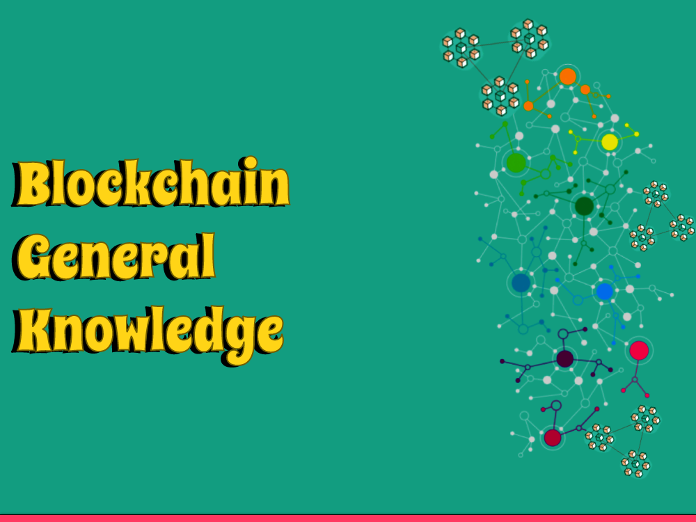

What You Need to Know
Blockchain innovation has been a hotly debated issue lately, with numerous specialists foreseeing that it will change the manner in which we manage exchanges and trade data. In any case, what precisely is blockchain, and how can it work? In this article, we'll furnish you with an overall outline of blockchain innovation and its likely applications.
What is Blockchain?
At its center, blockchain is a decentralized computerized record that is utilized to record exchanges. Dissimilar to customary records, which are regularly concentrated and overseen by a solitary substance, blockchain is dispersed across an organization of PCs. This makes it safer and impervious to altering.
In a blockchain network, every member keeps a duplicate of the record, which is refreshed continuously as exchanges happen. Each block of the chain contains a cryptographic hash of the past block, making a chain of blocks that can't be changed without discrediting the whole chain. This makes it basically unimaginable for a troublemaker to mess with the record without being recognized.
History of blockchain technology
Blockchain innovation was first presented in 2008 by a mysterious individual or gathering referred to as Satoshi Nakamoto as a decentralized framework for recording and checking computerized exchanges without the requirement for mediators like banks. The first and most notable use of blockchain innovation is the digital currency Bitcoin, which utilizes a public blockchain to record and check exchanges.
From that point forward, blockchain innovation has developed and been embraced in different businesses, including finance, medical care, store network, and the sky is the limit from there. Today, blockchain innovation is viewed as a promising answer for upgrading straightforwardness, security, and proficiency in numerous areas.
Blockchain and Cryptocurrencies
One of the most notable utilizations of blockchain innovation is in the domain of digital currencies. Cryptographic forms of money are computerized resources that are made and overseen utilizing blockchain innovation. The most notable digital currency is Bitcoin, which was made in 2009.
Bitcoin exchanges are recorded on a public blockchain record, which is kept up with by a decentralized organization of PCs. This makes Bitcoin exchanges safer and impervious to extortion than conventional monetary exchanges.
Other cryptographic forms of money, like Ethereum and Litecoin, additionally use blockchain innovation to make and oversee computerized resources. Notwithstanding monetary standards, blockchain innovation can possibly be utilized for a great many different applications, from production network the executives to casting a ballot frameworks.
Blockchain and Savvy Contracts
One of the most encouraging utilizations of blockchain innovation is in the domain of brilliant agreements. A brilliant agreement is a PC program that consequently executes the particulars of an agreement when certain circumstances are met. For instance, a brilliant agreement could be utilized to naturally move responsibility for property once a specific measure of cash has been paid.
Brilliant agreements are put away and executed on a blockchain network, making them safer and alter safe than conventional agreements. This can possibly altogether decrease the requirement for mediators, like attorneys and banks, in the execution of agreements.
Blockchain and Security
Since blockchain networks are decentralized and appropriated, they are innately safer than conventional concentrated networks. This causes them ideal for applications that to require elevated degrees of safety, like monetary exchanges and the stockpiling of delicate information.
In any case, similar to any innovation, blockchain isn't safe to security chances. One potential gamble is the supposed "51% assault," in which a solitary member or gathering of members control over half of the organization's processing power. This would permit them to possibly modify the record and commit extortion.
To moderate this gamble, blockchain networks regularly use agreement instruments, like proof-of-work or proof-of-stake, to guarantee that no single member have some control over the organization. Also, blockchain networks are continually developing to address arising security dangers and weaknesses.
How Blockchain Works
Blockchain is a disseminated record innovation that works through an organization of interconnected hubs. Every hub in the organization stores a duplicate of the blockchain, which is basically a chain of blocks containing information. Each block contains a bunch of exchanges that have been approved and checked by the organization.
For another block to be added to the blockchain, it should be approved and supported by the organization. This cycle, called mining, includes settling complex numerical calculations to check the exchanges and add the new block to the blockchain. When a block is added to the blockchain, it can't be modified or erased, guaranteeing the respectability of the information.
Since blockchain networks are decentralized and dispersed, they are intrinsically safer than conventional brought together organizations. This causes them ideal for applications that to require elevated degrees of safety, like monetary exchanges and the stockpiling of delicate information.
Types of Blockchain
There are a few sorts of blockchains, including public, private, and consortium blockchains. Public blockchains, like Bitcoin and Ethereum, are open and decentralized networks that anybody can join and partake in. Private blockchains, then again, are shut organizations that are confined to a select gathering of clients or associations. Consortium blockchains are a crossover of public and private blockchains, where a gathering of associations meet up to frame an organization that is to some degree open and to some degree shut.
Each sort of blockchain enjoys its own benefits and disservices, and is appropriate for various use cases.
Applications of Blockchain
Blockchain innovation has many applications across businesses, including:
Finance
Blockchain innovation is being utilized for computerized installments, settlements, and cross-line exchanges, as well concerning making advanced monetary standards and tokens.
Healthcare
Blockchain innovation is being utilized for secure capacity and sharing of clinical records, as well concerning drug following and inventory network the executives.
Supply Chain
Blockchain innovation is being utilized for following and following items along the production network, guaranteeing straightforwardness and responsibility.
Government
Blockchain innovation is being utilized for secure democratic frameworks, personality the executives, and openly available report keeping.
Advantages and Disservices of blockchain
Advantages
Decentralization:
Blockchain innovation is decentralized, intending that there is no weak link or control.
Transparency
Blockchain innovation gives a straightforward and auditable record of exchanges.
Security
Blockchain innovation is exceptionally secure, as each block in the blockchain is cryptographically connected to the past block, making it essentially difficult to adjust or erase.
Efficiency
Blockchain innovation can smooth out processes and diminish costs by dispensing with mediators and robotizing processes.
Disadvantages
Complexity
Blockchain innovation is perplexing and can be challenging to comprehend and carry out.
Energy consumption
Mining for new blocks in a blockchain network requires a ton of computational power, which can be energy-serious.
Scalability
Blockchain innovation can be slow and challenging to scale to deal with huge volumes of exchanges.
Future of Blockchain
Adoption by enterprises
More and more undertakings are investigating and embracing blockchain innovation for different use cases, which is driving advancement and development in the business.
Regulation
As blockchain innovation turns out to be more far and wide, states and administrative bodies are checking out controlling the business, which could altogether affect its future.
Sustainability
Efforts are in progress to make blockchain innovation more manageable by diminishing its energy utilization and natural effect.
Challenges confronting Blockchain technology
While blockchain innovation has numerous expected advantages, there are likewise a few difficulties and constraints that should be tended to. A portion of these include:
Lack of standardization
There is presently an absence of normalization in the business, which can make it hard for various blockchain organizations to connect with one another.
Security concerns
While blockchain innovation is for the most part viewed as secure, there are still dangers related with hacking, extortion, and other vindictive exercises.
Scalability
As blockchain networks develop and deal with additional exchanges, they can turn out to be slow and wasteful, which can restrict their value.
Regulatory challenges
As referenced before, legislatures and administrative bodies are beginning to check out managing blockchain innovation, which can make difficulties for the business.
Ethical contemplations in Blockchain technology
Similarly as with any innovation, there are moral contemplations related with the utilization of blockchain innovation. A portion of these include:
Privacy concerns
While blockchain innovation is for the most part thought to be secure, there are worries about the protection of individual information put away on the blockchain.
Centralization versus decentralization
Some contend that the decentralization of blockchain innovation is something positive, while others accept that it could prompt a centralization of force in the possession of a couple.
Accessibility
There are worries about the openness of blockchain innovation, especially for the individuals who might not approach the vital assets or foundation to utilize it.
Future utilizations of Blockchain
As blockchain innovation proceeds to advance and develop, all things considered, new and creative applications will arise. A few expected future utilizations of blockchain innovation include:
Digital personality management
Blockchain innovation could be utilized to make secure and decentralized computerized character frameworks.
Internet of Things (IoT)
Blockchain innovation could be utilized to empower secure and proficient correspondence and information trade between IoT gadgets.
Energy trading
Blockchain innovation could be utilized to work with shared energy exchanging, permitting people and associations to trade sustainable power.
Conclusion
Blockchain innovation can possibly change the manner in which we go through with exchanges and trade data. Its decentralized, conveyed nature makes it safer and impervious to altering than conventional unified frameworks. While blockchain is still in its beginning phases of advancement, its potential applications are immense and differed. Whether you're keen on cryptographic forms of money, savvy contracts, or essentially the eventual fate of innovation, blockchain is a point worth investigating.